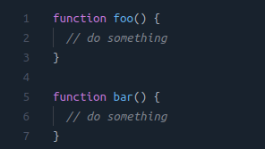

Advantages & disadvantages of declaring JavaScript functions inside objects.
Wednesday, December 30, 2020 • Tech
Few days back, one of my friends was asked this question in his JS developer interview. There are several methods & coding techniques to write JavaScript functions. The most common approach is -
Method 1 :

In interview, he was given a code similer to this pattern.
Method 2 :

From the top level view, we do not find any specific difference in terms of code readability or code execution time. But if we deep dive a bit we can see that -
Advantages :
- The real advantage of using second method(functions inside object) is that we are not polluting the global namespace with some extra functions means in first code snippet, we have 2 variables declared in global namespace and in second method we have only one. As we are not polluting the global namespace, global variable "foo" declared anywhere else will not hide our "foo" function inside "my" object.
- An another advantage we can say that, now all related functionalaties are grouped together so it makes our code little bit more cleaner, readable & easy to understand.
Disadvantages :
- In second method, calling a function is slightly longer (eg : my.foo() ) and if we have bunch of extra nested functions, it would be more longer
(eg : my.today.pankaj.getName() ). - Second method requires some extra processing by JS engine but this will not affect the speed much as it would be like optimizing our code execution time ~0.1ms , not an achievement).